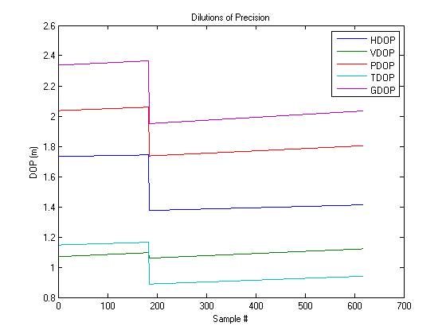
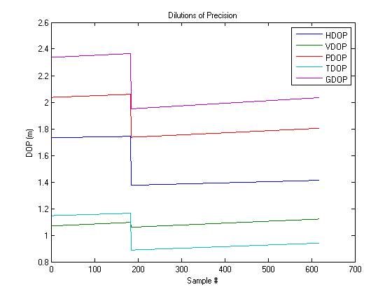

Contents
MECH 6970 Lab 3, Part I, b)
Robert Cofield
created 2013-10-09
Using Receiver 0 had to copy some ephemeris data from Receiver 1 over to Receiver 0 due to parsing errors.
Add the folder ../misc/geodetic to your path.
clear all; close all; clc fprintf('\nPart 1 - b)\n') % try % matlabpool(3) % comment this out if you don't have the parallel toolbox % end part1b_load_data kml_file = kml('Lab3_Part1_b'); tic
Part 1 - b)
Parameters
% Smoothing window (samples @ 1 Hz) M = 10; % Estimated transit time from SV to user c = 299792458; transit_time_est = 20e6/c; % seconds fL1 = 1575.42e6; % L1 frequency, Hz wavelengthL1 = c/fL1; % LLA estimate of the user position for unit vectors (using Google Earth) lla_user_est = [dms2deg([32,35,26.1]), -dms2deg([85,29,20.61]), 205]; % lat lon alt % Initial Estimates to Use x0 = wgslla2xyz(lla_user_est(1), lla_user_est(2), lla_user_est(3)); % Estimate of the user clock bias b0 = 100; % stop when solution only moves slightly each iteration pos_tol = .001; % maximum iterations for each epoch maxit = 100; % Measurment Covariance coefficient % R_coeff = 0.25; % Initial Estimate Error Covariance % P0 = diag([100000 100000 100000 100]);
Calculate SV Positions from Ephemeris
ephem_mat = zeros(21,nsv); ephem_time = zeros(1,nsv); % gps seconds into subplot(week at which ephem was transmitted sv_clkcorr = zeros(nsv,ndat); sv_clkcorr_psr = zeros(size(sv_clkcorr)); % range correction corresponding to clock correction svpos = zeros(3,nsv,ndat); psrL1corr = zeros(size(psrL1)); carL1 = -adrL1*wavelengthL1; carL1corr = zeros(size(carL1)); for i = 1:nsv % get the ephemeris matrix into the correct format [ephem_mat(:,i), ephem_time(i)] = ephem_novatel2gavlab(ephem_mat_novatel(:,i)); % Find the SV Position at each of the measurement epochs we have ephem_mat_ = ephem_mat(:,i); for k = 1:ndat tx_time = time(k);%-transit_time_est; [svpos(:,i,k), sv_clkcorr(i,k)] = calc_sv_pos(ephem_mat_, tx_time, transit_time_est); sv_clkcorr_psr(i,k) = sv_clkcorr(i,k)*c; psrL1corr(i,k) = psrL1(i,k) + sv_clkcorr_psr(i,k); carL1corr(i,k) = carL1(i,k) + sv_clkcorr_psr(i,k); end end % Look at SV position LLA just to check the positions svpos_lla = zeros(size(svpos)); for i = 1:nsv for k = 1:ndat [lat, lon, alt] = coordutil.wgsxyz2lla(svpos(:,i,k),1000); svpos_lla(:,i,k) = [lat, lon, alt]; end end % output LLA sv pos initial to KML file kml_f_svpos0 = kml_file.createFolder('SV Initial Positions'); for k = 1:8 kml_f_svpos0.point(svpos_lla(2,k,1),svpos_lla(1,k,1),svpos_lla(3,k,1)); end clear i k
Carrier Smoothing
Accumulated Doppler (ADR) is the negative of the Carrier Phase
% Carrier smoothed range estimates - uncorrected for relativistic term psrL1_cs1 = zeros(nsv,ndat); psrL1_cs1(:,1) = psrL1(:,1); % start by copying % Carrier smoothed range estimates - corrected for relativistic term psrL1corr_cs1 = zeros(size(psrL1_cs1)); psrL1corr_cs1(:,1) = psrL1corr(:,1); % start by copying for k = 2:ndat for i = 1:nsv % make sure we have data for this sv % assume that no PSR data means no ADR data, vice versa if ~psrL1(i,k-1) % haven't had data before this if ~psrL1(i,k) % still don't have dat continue else % sv just came into view -> copy to begin (this happens to SV 12) psrL1_cs1(i,k) = psrL1(i,k); psrL1corr_cs1(i,k) = psrL1corr(i,k); continue end end % Single Frequency psrL1_cs1(i,k) = psrL1(i,k)/M + (M-1)/M*( psrL1_cs1(i,k-1) + carL1(i,k) - carL1(i,k-1)); psrL1corr_cs1(i,k) = psrL1corr(i,k)/M + (M-1)/M*( psrL1corr_cs1(i,k-1) + carL1corr(i,k) - carL1corr(i,k-1)); end end clear i
Least Squares Position Estimation
x_est = zeros(3,ndat); % first guess x_est(:,1) = x0; b_est = zeros(1,ndat); iterations = zeros(1,ndat); dop = zeros(5,ndat); % % Estimator Loop for k = 1:ndat % find satellites for which data exists at this timestep % must find in original data because others will be nonzeros after % corrections/smoothing have_data = find(psrL1(:,k)); svpos_ = svpos(:,have_data,k)'; % use relativistic correction term and carrier smoothing psr_ = psrL1corr_cs1(have_data,k)'; % psr_ = psrL1_cs1(have_data,k)'; % R = R_coeff*eye(length(have_data)); % [x_est(:,k), b_est(k), iterations(k)] = PsrPos_WLSE(psr_, svpos_, R,P0, x0,b0, pos_tol,maxit); [x_est(:,k), b_est(k), iterations(k), dop(:,k)] = PsrPos_LSE(psr_, svpos_, x0,b0, pos_tol,maxit); if iterations(k) == maxit warning('Hit maximum iterations for sample # %i',k); end end
Examine Solution
% gps reported soln gps_pos = [423058.737253 -5362534.45249 3415910.22963]; [lat, lon, alt] = wgsxyz2lla(gps_pos, 1000); gps_pos_lla = [lat lon alt]; % x_mean = mean(x_est,2); % [lat_mean, lon_mean, alt_mean] = wgsxyz2lla(x_mean) lla_est = zeros(3,ndat); for k = 1:ndat [lat,lon,alt] = wgsxyz2lla(x_est(:,k),100000); lla_est(:,k) = [lat;lon;alt]; end % save pos soln over time kml_f_possoln = kml_file.createFolder('Position Solution over time'); for k = 1:ndat kml_f_possoln.point(lla_est(2,k),lla_est(1,k),lla_est(3,k)); end mean_lla_soln = mean(lla_est,2) % save mean position solution kml_f_meanpos = kml_file.createFolder('Mean Position Solution'); kml_f_meanpos.point(mean_lla_soln(2),mean_lla_soln(1),mean_lla_soln(3)); % figure; % subplot(3,1,1); % plot(x_est(1,:)); grid on % ylabel('X'); title('ECEF Position Estimate') % subplot(3,1,2); % plot(x_est(2,:)); grid on % ylabel('Y'); % subplot(3,1,3); % plot(x_est(3,:)); grid on % ylabel('Z'); xlabel('Sample #') figure; subplot(3,1,1); plot(lla_est(1,:)); grid on ylabel('Lat (deg)'); title('LLA Position Estimate') subplot(3,1,2); plot(lla_est(2,:)); grid on ylabel('Lon (deg)'); subplot(3,1,3); plot(lla_est(3,:)); grid on ylabel('Alt (m)'); xlabel('Sample #') figure; plot(dop'); legend('HDOP', 'VDOP', 'PDOP', 'TDOP', 'GDOP') ylabel('DOP (m)'); xlabel('Sample #'); title('Dilutions of Precision');
mean_lla_soln = 1.0e+02 * 0.325910298457795 -0.854888059197880 2.461947926259890
 
 End matters
% try % matlabpool close % end toc save part1b_result kml_file.run();
Elapsed time is 20.868279 seconds. The KML file has been saved, open it in Google Earth